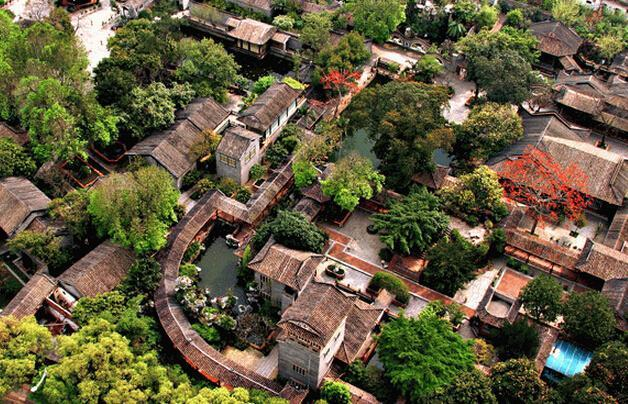
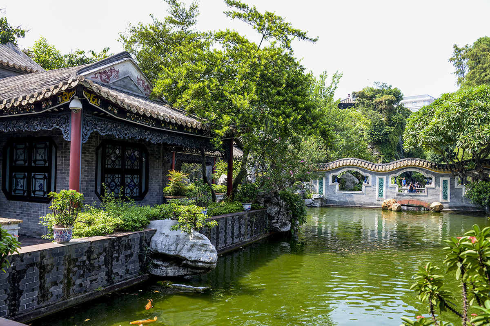
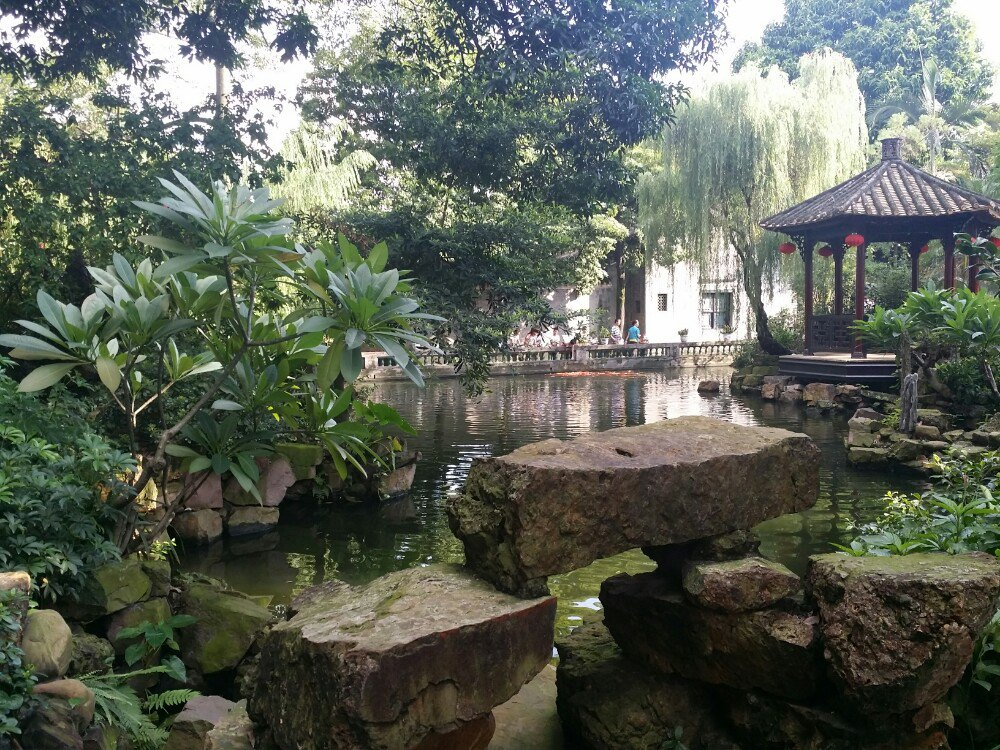
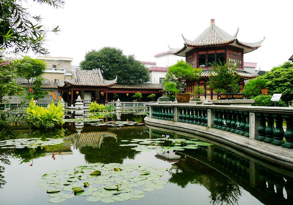

带你参观清晖园
| 清晖园，国家级文物保护单位，国家AAAA级旅游景区，中国十大名园之一。 明朝万历丁未（1607）状元黄士俊（1570-1661年）于明天启元年（1621年）建筑黄家祠、天章阁和灵阿之阁。清乾隆年间（1711—1799年），大良进士龙应时(1716—1800年)购得旧址，修葺扩建，植花莳草，渐成规模。1805年，龙廷槐（(1749—1827年)建小方园。1806年，其子龙元任扩建，称“清晖园”，请同榜进士，江苏书法名家李兆洛题写园名。后其子龙元僖（1809-1884）建龙太常花园、楚芗园，几经周折转手，龙太常花园后改称“广大园”。龙氏后人经年精修，这一古老园林渐富岭南特色。1959年后，时任广东省委书记陶铸视察顺德，对清晖园修缮高度关注，指示重点保护，并拨款修复，更将楚芗园、广大园、介眉堂、竞勤堂合并，统称“清晖园”，后辟作顺德县委第一招待所。改革开放后，增设酒楼、宾馆、停车场，为旅游、饮食、住宿综合服务单位。二十世纪九十年代，顺德政府拨款修复扩建清晖园。二十世纪末，政府再度扩建，增添众多景点。1984年春邓小平同志来到清晖园，1994年春，邓小平同志在清晖园门前略作停留。为这一古老园林留下珍贵历史 |  |
| 如今，占地22,500平方米的清晖园与佛山梁园、番禺余荫山房、东莞可园并称广东清代四大名园。园址原为明朝万历丁未状元黄士俊宅第，[5]明万历三十五年（公元1607年），顺德杏坛镇人黄士俊高中状元，官至礼部尚书、大学士。为了光宗耀祖，于明天启元年，在城南门外的凤山脚下修建了黄家祠和天章阁、灵阿之阁。后黄家衰落，庭院荒废，清乾隆年间，当地龙氏碧鉴海支系21世龙应时得中进士，将天章阁、灵阿之阁购进。该院归龙家后，由龙应时传与其子龙廷槐和龙廷梓，后来廷槐、廷梓分家，庭院的中间部分归龙廷槐，而左右两侧为龙廷梓所得。其中龙廷梓将归他的左、右两部分庭院建成以居室为主的庭园，称为“龙太常花园”和“楚芗园”，人们俗称左、右花园，南侧的龙太常花园在园主衰落后，卖给了曾秋樵，其子曾栋在此经营蚕种生意，挂上“广大”的招牌，故又称广大园。近几年来，顺德区委区政府对清晖园进行了大规模修缮，1959年后，时任广东省委书记陶铸视察顺德，对清晖园修缮高度关注，指示重点保护，并拨款修复，更将楚芗园、广大园、介眉堂、竞勤堂合并，统称“清晖园”，后辟作顺德县委第一招待所。改革开放后，增设酒楼、宾馆、停车场，为旅游、饮食、住宿综合服务单位。二十世纪九十年代，顺德政府拨款修复扩建清晖园。二十世纪末，政府再度扩建，增加了凤来峰、读云轩、留芬阁、沐英涧、红蕖书屋等多处建筑景点，如今，占地22,500平方米的清晖园与佛山梁园、番禺余荫山房、东莞可园并称广东清代四大名园。 |
下面是一些清晖园的景观图
|  |
|  |
|  |
知道怎样去清晖园吗？导航帮到您
| 联系方式：123456 | |
| QQ邮箱：1031006120@qq.com |